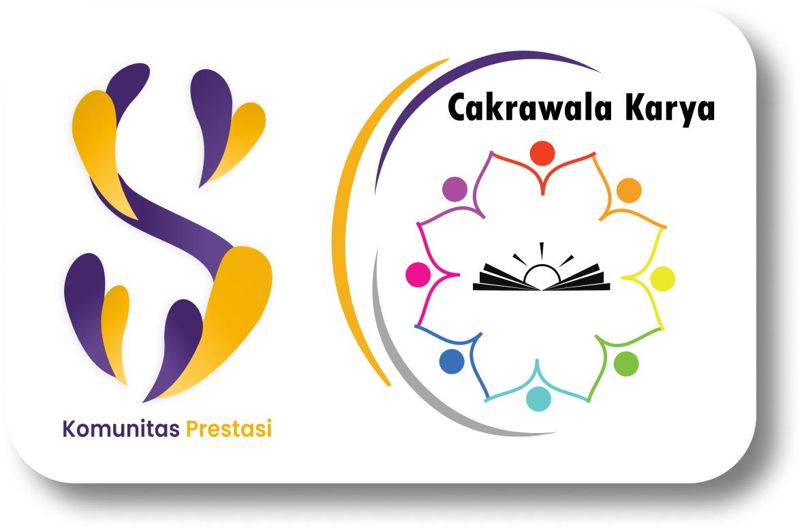

Profile
Apa itu KOMPRES UNAIR?
Komunitas Prestasi (KOMPRES) merupakan Badan Semi Otonom (BSO) yang ada di Fakultas Sains dan
Teknologi (FST), Universitas Airlangga. KOMPRES berfokus pada pengembangan SDM (Sumber Daya Manusia)
terutama dalam bidang kepenulisan dan riset. Awal perjalanan KOMPRES dimulai sejak tahun 2020 lalu.
Adapun sejarah perjalanan KOMPRES sebagai berikut ini.
Komunitas prestasi atau yang akrab dikenal dengan nama kompres adalah salah satu Badan Semi Otonom
(BSO) yang ada di Fakultas Sains dan Teknologi, Universitas Airlangga. Kompres bergerak dan mewadahi
mahasiswa mahasiswi FST terutama dalam bidang kepenulisan dan riset.
Awal perjalanan kompres dimulai dengan inisiasi dari Badan Eksekutif Mahasiswa (BEM) Fakultas Sains
dan Teknologi (FST) Departemen Keilmuan pada tahun 2019 yakni kabinet kolaborasi karya mengusulkan
suatu komunitas bernama komunitas lomba. Dimana dalam komunitas ini mewadahi mahasiswa FST dalam
bidang kepenulisan dan desain grafis. Perjalanan komunitas lomba berlanjut sampai tahun 2020 yakni
kabinet sinergi milenial dengan tetap bernama komunitas lomba, namun hanya bidang kepenulisan saja.
Sedangkan desain grafis sudah ada wadah intens yang menaungi yakni Science Art.
Melihat perjalanan dan kiprah komunitas lomba selama dua tahun berjalan, membuat keberadaan
komunitas ini penting dan harus tetap survive ada di FST. Sehingga pada tahun 2021 berganti nama
menjadi Komunitas Prestasi atau yang akrab dikenal dengan nama Kompres. Dalam satu tahun
kepengurusan kompres telah menunjukkan kiprahnya sebagai komunitas dengan segudang prestasi yang
diberikan terutama dalam bidang kepenulisan, baik dalam tingkat regional, nasional, maupun
internasional. Berbagai macam program kerja dan agenda turut membersamai para mentor yang ahli di
bidangnya. Sehingga pada tanggal 14 Oktober 2021 kompres telah resmi menyandang gelar sebagai Badan
Semi Otonom (BSO) yang mandiri dalam menjalankan tupoksinya.
Dalam komunitas prestasi sendiri ada tiga Departemen yakni :
- Departemen Riset dan Keilmuan (RISKEL).
- Departemen Human Research and Development (HRD).
- Departemen Public Relation (PR).
Berbagai program kerja dan agenda terus menerus mengadakan pembaruan dengan harapan lebih baik dan paripurna dalam komunitas prestasi. Sampai pada akhirnya yakni kepengurusan 2022 mengadakan suatu kabinet pertama bernama kabinet Cakrawala Karya.